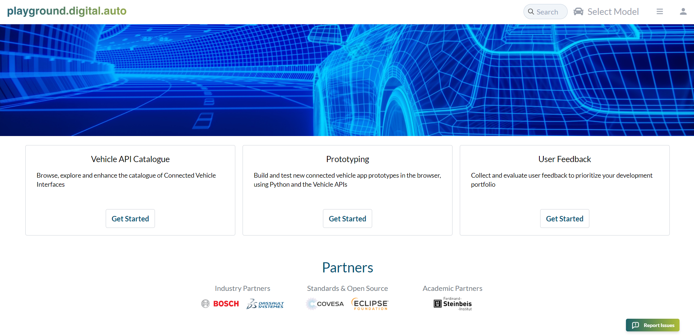
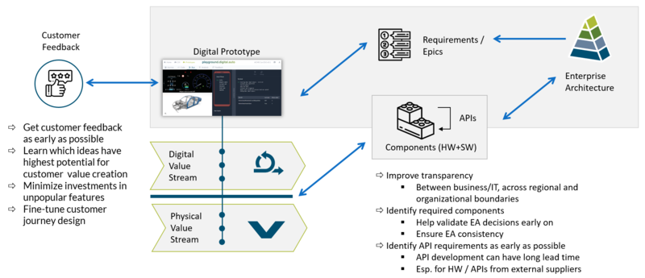
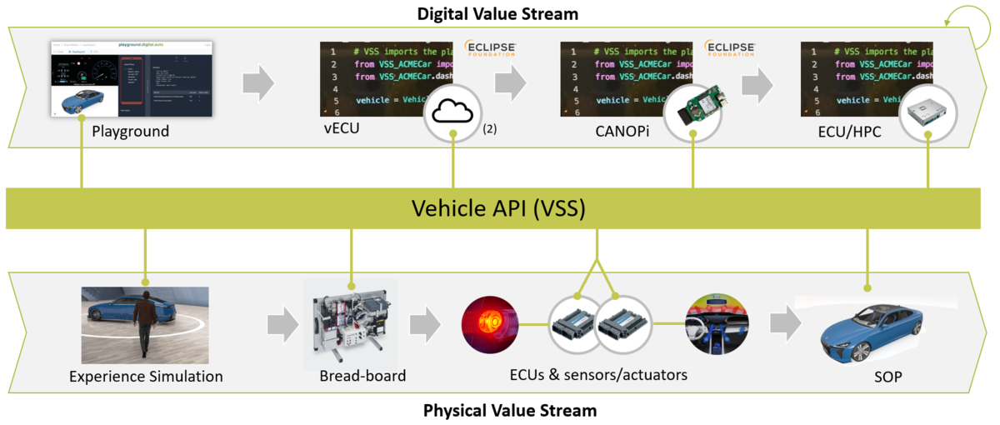
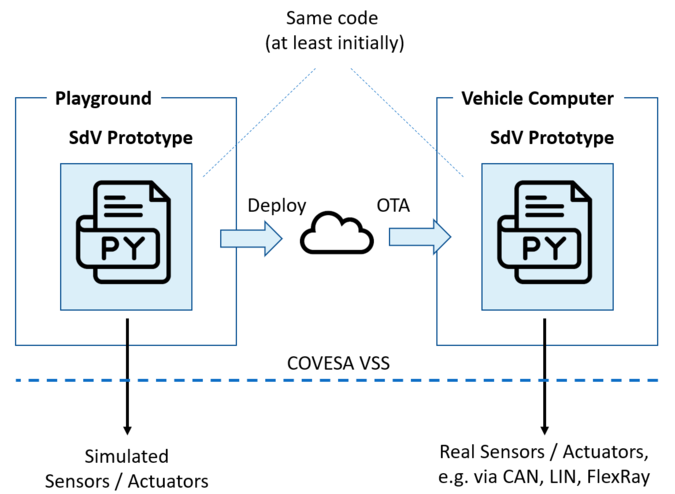
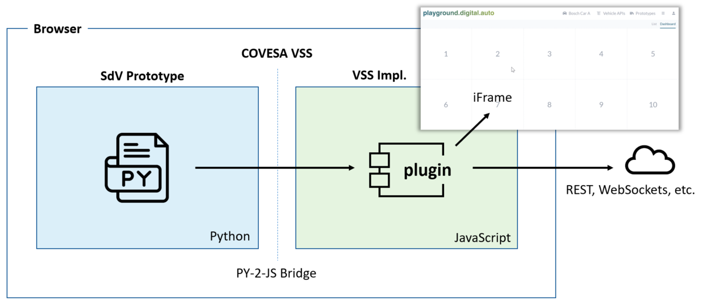
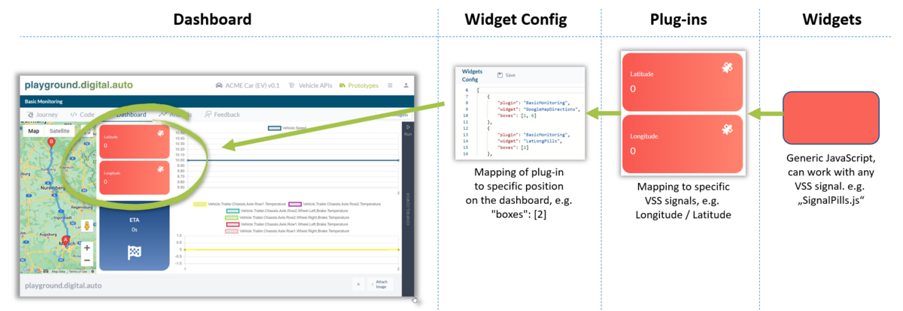
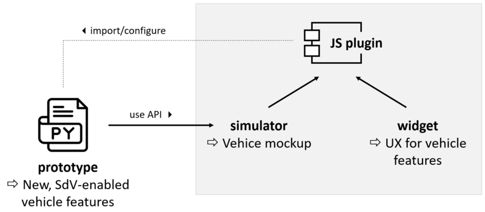
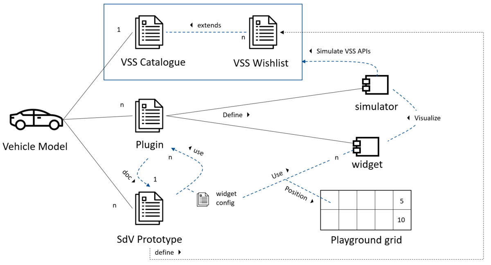

The playground.digital.auto is a cloud-based, rapid prototyping environment for new, SDV-enabled features. The prototypes are built against real-world vehicle APIs and can be seamlessly migrated to automotive runtimes, such as Eclipse Velocitas. The playground is open and free to use at playground.digital.auto.
The playground is designed to foster continuous, customer-centric digital innovation. By supporting the new way of thinking and working digital first, digital.auto enables developers to deliver fast tangible results and early validation. Prototypes are developed in Python. To interact with vehicle sensors and actuators, the COVESA Vehicle Signal Specification (VSS) is used. In the browser environment of the playground, the vehicle sensors and actuators are mocked, using simple test values. Access to VSS in Python is provided via the emerging VSS Python mapping, as defined by the Eclipse Velocitas project (part of Eclipse SdV). As we will discuss in the following, access to more sophisticated vehicle simulation environments or even real sensors and actuators is possible via a cloud bridge mechanism.
Also, please check out the following additional resources:

The playground.digital.auto enables early prototyping which has two main benefits:
Customer-centric innovation from the start: Early customer feedback helps to learn which ideas have highest potential for customer value creation. This helps minimizing investments in unpopular features. Fine-tuning the customer journey design early is key for customer acceptance. Of course this does not mean that the software should not constantly be improved later on, even after the start of production. After all, this is why DevOps pipelines with OTA for remote vehicle updates are currently being established.
Fast delivery of tangible, validated results: Doing early prototyping also has many benefits from the development perspective: Having a functional mockup early on in the development cycle helps improving transparency between business/IT, across regional and organizational boundaries. It also helps to validate architecture decisions early on, as well as to have a consistent enterprise architecture across all features. Finally, being able to identify API requirements as early as possible is key, because providing an API which encapsulates hardware usually has a very long lead time. This is especially true for hardware and APIs coming from external suppliers.

The following is looking at both, the digital and physical value stream in digital.auto, followed by a discussion of the evolution of code in the digital value stream.
The digital.auto playground is designed to support the general philosophy of digital.auto, which is assuming two distinct value streams, moving at different speeds: The physical and the digital value stream. These two value streams are de-coupled via a Hardware Abstraction Layer (HAL), which is encapsulating the complexities of vehicle physics, embedded systems, and bus systems. Software components developed in the digital value stream are accessing vehicle functions via well defined interfaces (e.g. VSS). This de-coupling allows components north and south of the API to be (more or less) seamlessly interchanged. For example, a prototype in the playground can first run against simple test values provided by VSS mock implementations in the playground. Next, one might plug in a real vehicle simulation, running south of the API, and providing a more realistic system behavior. Finally, the simulation will be replaced by hardware with real sensors and actuators - starting with a breadboard, and eventually the final vehicle.

Similarly, north of the API, new SdV features can initially be developed in Python in the playground. Next, the SdV prototype code can be deployed to a professional development environment - as provided, for example, by Eclipse Velocitas. In this environment, the new SdV feature can first be tested in the cloud, before finally being deployed on a vehicle computer.
In order for the SdV code not to break when moving from the playground to the real development environment, the VSS Python APIs are currently being standardized by the Eclipse community. This allows to migrate code more easily between different environments. For example, as described in the figure below, an SdV function might initially be implemented as a prototype in the digital.auto playground. After the initial customer validation, the decision is made to migrate the code from the prototyping environment to the professional development environment, including proper support for CI/CD. This can be done easily because of the standardization of the Python APIs. In fact, the next release of the playground will have built-in support to deploy into Eclipse Velocitas by creating a complete Velocitas project in GitHub, based on the initial prototype.

One important note: Even if the final target language for the production system is not Python - but maybe C++ or Rust - having a Python prototype for early vehicle tests is extremely valuable, because it helps getting an end-to-end implementation done quickly, and stabilizing the APIs between the distributed components.
The VSS API is organized in a strict tree hierarchy. The nodes of the VSS tree are called branches. The leaves in the tree are representing sensors, actuators, and attributes. An example for a sensor representation in VSS looks like this:
Vehicle.Cabin.Seat.Row1.Pos1.IsBelted
This VSS API or data point will return a boolean value, indicating whether the belt is engaged. Please note that the VSS API catalogue can be adapted for individual vehicle instances - for example, supporting vehicles with different numbers of seat rows.
An example for an actuator in VSS is shown in the following:
Vehicle.Cabin.Seat.Row1.Pos1.BackrestRecline
This API will control the seat z-axis depends on seat tilt.
Using the VSS API in Python is straight forward. For example, to get the current state of a seat belt, the following code can be used:
from ACME_Car_EV_v01 import Vehicle
vehicle = Vehicle()
vehicle.Cabin.Seat.Row1.Pos1.IsBelted.get()
The get() function will simply return the current state of the IsBelted sensor represented by the corresponding Python object in the digital.auto playground library.
Not very surprisingly, to control an actuator, a set() API is provided in Pyhton, e.g.:
vehicle.Cabin.Seat.Row1.Pos1.BackrestRecline.set(25)
However, as straight-forward as this code actually looks like, the logic behind it is not as straight forward - the reason being that this API is supposed to control a physical device, which might not react immediately to the request (or maybe not at all). From the VSS specification: “Actuators are used to control the desired value of a property. Some properties in a vehicle cannot change instantly. A typical example is position of a seat or a window. Reading a value of an actuator shall return the current actual value, e.g. the current position of the seat, rather than the wanted/desired position. A typical example could be if someone wants to change the position of a seat from 0 to 100. This can be changed by setting the corresponding actuator to 100. If the actuator is read directly after the set request it will still return 0 as it might take some seconds before the seat reaches the wanted position of 100. If the seat by some reason is blocked or cannot be moved due to safety reasons it might never reach the wanted position. It is up to the vehicle to decide how long time it shall try to reach the desired value and what to do if it needs to give up.”
Even though BackrestRecline is encapsulating an actuator, its current value can be read using get():
vehicle.Cabin.Seat.Row1.Pos1.BackrestRecline.get()
However, as per the above discussing please note that it might not be 100% clear what the return value is actually indicating. Note that there is work going on at the moment to support APIs which differentiate between the actual value vs the intended value of an actuator.
Finally, please also note that the current version of VSS used here is not supporting meta data in the API that could be used to support additional service level, including real-time requirements, request priorization, etc. This means that the SdV code using VSS currently is aiming at applications which are labeled as “QM”, according to the ASIL standard - meaning the code does not support any of the higher ASIL safety levels, such as ASIL A, B, C or D.
When dealing with sensor data - even for mocked sensors - it can often make sense to use a more event-driven model, instead of constantly polling the sensor. To support this, the Python API for VSS is supporting a simple event-driven programming model. Using the subscribe() method, a callback function can be associated with a sensor. This function will be called every time a new value is available.
In the following code sample, a new function on_hood_is_open_changed is defined, and then associated with vehicle.Body.Hood.IsOpen via the subscribe() method. After this, a mock wiper is turned on to MEDIUM speed. Next, the mock hood is opened. This will result in on_hood_is_open_changed being called, which in turn will turn the wipers off.
def on_hood_is_open_changed(IsOpen: bool):
if IsOpen:
vehicle.Body.Windshield.Front.Wiping.Mode.set(vehicle.Body.Windshield.Front.Wiping.Mode.OFF)
vehicle.Body.Hood.IsOpen.subscribe(on_hood_is_open_changed)
vehicle.Body.Windshield.Front.Wiping.Mode.set(vehicle.Body.Windshield.Front.Wiping.Mode.MEDIUM)
vehicle.Body.Hood.IsOpen.set(True)
The following provides an overview of the playground architecture, as well as the key elements of the plugin concept.
The digital.auto playground is designed to allow execution of SdV Python code against the standard VSS Python API. The SdV Python code is executed in the browser, against a set of Python objects representing the VSS API. To ensure a good user experience, the playground also has to support easy manipulation of the HTML Document Object Model (DOM), as well as remote interaction with the cloud. Since most browser development is done in JavaScript these days, the playground supports a plug-in mechanism which is implemented in JavaScript. This means that the SdV Prototypes in Pyhton are really interacting with VSS objects which are implemented in JavaScript. This way, a vehicle mockup can easily be built using browser-native tools. The mechanism used here is a Python-to-JavaScript bridge, which is translating between the SdV functions in Python and the plug-ins in JavaScript.

The playground is trying to maximize re-use. This is happening on two levels:
The figure below describes how to get from widget to plug-in and eventually to the creation of custom dashboards using specific plug-ins.

Plugins for the digital.auto playground are usually providing a mockup and a visualization of a specific vehicle feature, exposed via VSS. An example could be a Google maps plugin, which is visualizing the vehicle’s current position by accessing Vehicle.CurrentLocation.
A plugin can provide two things:
An SdV prototype that wants to make use of a plugin must do two things:
Plugins can be combined in different ways. For example, an SdV prototype might import the Google maps plugin to visualize the vehicle`s position on a map, plus another plugin which is actually implementing Vehicle.CurrentLocation. Or, the UX and the VSS implementation might be combined in one plugin, depending on the design. 
The digital.auto project is aiming to build up a rich plug-in library over time. However, often it will be required to implement dedicated plugins for a specific prototype. To support this, the plugin mechanism in the playground is open, both for plugin consumption as well as provisioning.
For the implementer of a plugin, the following provides more detailed instructions for doing so.
By default, the VSS Python API is providing an implementation which provides a very basic functionality: the get() functions are returning the current value (initialized randomly). The set() functions are storing the value passed to them.
Simulators are providing a way to change this functionality. They allow plug-in developers to implement more specific functions for a given VSS sensors, actuator, or attribute. For example, a get function could communicate with a remote service in the cloud to receive the current sensor value. This can be any cloud, assuming that Cross-Origin Resource Sharing (CORS) or an alternative mechanism is used.
A simulator can also be combined with a widget, e.g. to visualize a new sensor value.
Widgets can use the built-in grid area of the playground to visualize vehicle functions, or even provide an interactive experience - using standard browser functionality. The grid is divided into 5x2 grid cells. A widget can occupy 1 or more grid cells, always assuming a rectangular shape.
The grid mechanism is designed as simple as possible (we wanted to avoid the complexities of a full-blown portal server), yet giving a lot of flexibility. Each widget is mapped to an iFrame, meaning that a widget can use all functionalities which an iFrame supports.
When designing a widget, using the right size must be ensured. For example, the ideal size for a 2x1 box video in the grid would be: 1080x756
It doesn’t need to be exact, but
Ideally, different widgets should use a similar style, so that if multiple widgets from different source are combined, they provide a consistent use experience. To achieve this, digital.auto recommends the following:
In order to use a plugin, it needs to be imported and configured. The configuration is necessary so that the playground understands which prototypes should be used, and how to map them to the playground`s grid-based widget layout. The following example is configuring the use of two plugins, InstrumentPanel and SmartPhone:
[
{
"boxes": [2, 3],
"plugin": "InstrumentPanel",
"widget": "Speedometer"
},
{
"boxes": [1],
"plugin": "SmartPhone",
"widget": "Image"
}
]
In this example, SmartPhone will occupy the first position in the playground grid, the Instrument panel the 2nd and 3rd.
In order now to use these plugins in Python, the SdV prototype has to import plugins, like in the following example:
from ACME_Car_ICE_v01 import Vehicle
import plugins
plugins.SmartPhone.set_text("Added text to SmartPhone")
vehicle = Vehicle()
await vehicle.Cabin.InstrumentPanel.Status.set(f"TEXT IN InstrumentPanel")
In this example, a text is added via a proprietary API to a the mockup of a Smart Phone. This is because a Smart Phone is not part of VSS. Next, a text is added to Vehicle.Cabin.InstrumentPanel.Status. In this case, InstrumentPanel.Status was added to the VSS API as a Wishlist-Item, because this could actually make sense from a VSS perspective.
A plugin is made up of a Python module with one default exported function, that takes two deconstructed object parameters: widgets and simulator. Both are described in the following:
Widgets has one method, register that allows you to register widgets that can used by all the prototypes in the model through the Widgets Config:
register(widget_name: string, onActivate: (container: Container) => undefined | WidgetDeactivateFunction) => undefined
Container has 3 properties:
| # | Argument | Description |
|---|---|---|
| 1 | injectHTML(html: string) => void |
injectHTML is used to inject html in the box, essentially setting its innerHTML |
| 2 | injectNode(node: Node) => void |
injectNode is used to inject an HTML Node (element or fragment) in the box. This is usually needed for complex use cases that injectHTML can’t be used for, like event listeners. |
| 3 | window | The window object of the container iframe. |
WidgetDeactivateFunction() => void
The deactivate function is executed whenever a widget is removed from the grid. This is useful for clearing stuff such as intervals
simulator(api: string, method: "get" | "set" | "subscribe", func: SimulatorModifier) => void
Simulator is a function that let’s you override any VSS API’s get , set and subscribe methods
It accepts 3 parameters:
SimulatorModifer is called with two deconstructed object parameters:
The return value of the previous modifier will be passed to prevReturnValue.
The widgets config is a JSON array of GridItem objects specified in the code tab of the prototype.
GridItem has 3 properties:
boxes: (number[]): The boxes this grid item should occupy. Boxes must be adjacent (horizontally or vertically) and for now, a grid item can occupy a maximum of 2 boxes.
plugin: (string): The name of the plugin for this widget. This is the plugin name specified when creating a plugin.
widget: (string): The widget name. This is specified in the plugin code when registering a widget
The following provides an overview of all elements involved: A vehicle model in the playground includes one instance of a VSS catalogue (e.g. the YAML definition file with all the VSS definitions), n number of plugin implementations, and n number of SdV prototypes.
The VSS catalogue can be extended to use VSS Wishlist items, defined ad-hoc by different prototypes. digital.auto and COVESA are currently working on a way to submit items from the VSS Wishlist to the COVESA process for standardization of VSS.
Plugins are defining simulators and widgets. Widgets are providing the UX for simulators (defined in the same of other plugins). In the future, each plugin will be associated with one SdV prototype for documentation purposes, as well as for defining the VSS wishlist APIs which might be required by the plugin.
SdV prototypes are using plugins. In order to use a plugin, the configuration will have to state where exactly the required widgets should be played on the prototype-specific version of the playground grid.
